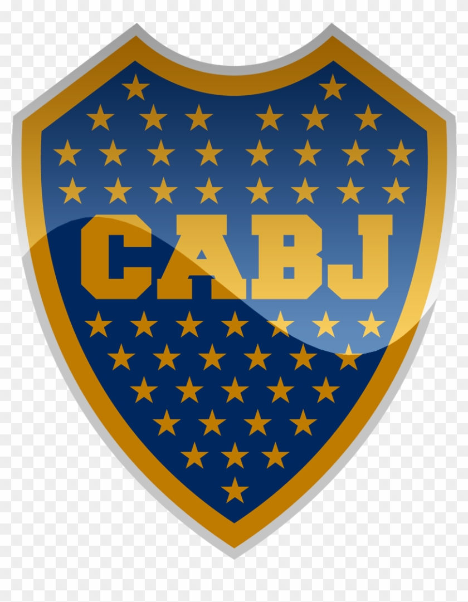
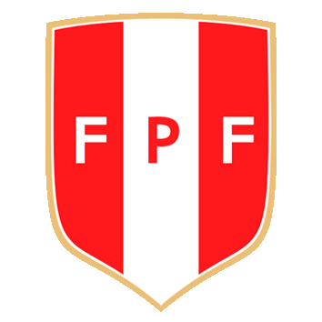

WIKI PES6
La wiki pa los pibes!
Inicio
Introduccion
Esta es una wiki dedicada a los pescadores del PES6. Aca Reunimos nuestros mejores momentos captados en camara
mas
informacion destacada sobre el futbol en pes6. Tenemos las mejores jugadas, los mejores goles, e informacion
actualizada al dia de los clubes y la actualidad del PES6.
Para empezar quiero dar las gracias yo (jugador "xd2") a IvanProducciones (nenanackt1) por ceder imagenes y derechos de
videos para lograr
que la wiki logre un bello aspecto y luzca agradable para los visitantes.
Tutorial
Una forma facil para navegar en esta pagina es entrando a los links dedicados a un tema especifico. Por ejemplo tenemos
la pestaña de mejores jugadas, la de mejores goles, o la de tiros mas ambiciosos. Tambien tenemos el glosario para que
entiendan a que nos referimos en algunos casos.



Agradecimientos
Para terminar quiero agradecer a mi familia que siempre me apoyo para hacer realidad este sueño, tambien a los pibes
del discord que siempre tiraron la buena, me aconsejaron y ayudaron para que la pagina quede lo mejor posible. Por ultimo
quiero agradecerte a vos que estas leyendo esto por ser una persona interesada en el PES6 que es
el mejor juego de todos los tiempos. Gracias a vos la comunidad no va a morir.
Para terminar quiero mandar un mensaje a todos los pescadores que piensan que estan solos en el mundo... Tranquilos.
ESTE BARCO ES MUY GRANDE Y HAY MUCHOS PECES EN EL MAR